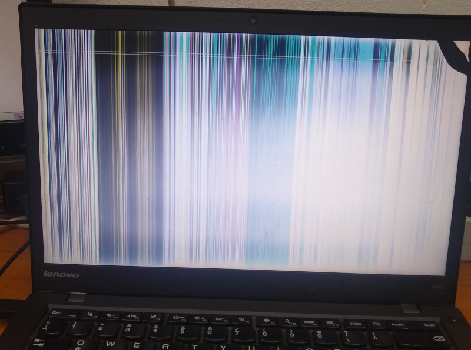

Dos lecciones aprendidas de la peor forma:
- Al transportar la laptop hacerlo SIEMPRE con la tapa cerrada y lejos de los niños.
- Asegurarse de que en caso de ser posible el BIOS pueda utilizarse con monitor externo.

Y si, este post tiene una alta componente de catarsis :)